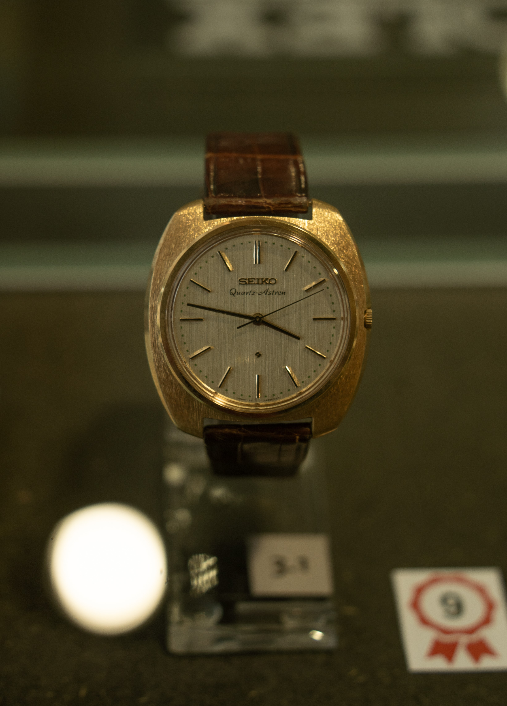

Rundgang Glanzstücke
Seiko Armbanduhr
In den 1960er-Jahren gab es nicht nur einen Wettlauf zum Mond, sondern auch einen um die erste Armbanduhr mit Quarzwerk. Gewinner war die japanische Uhrenfirma Seiko. Zu Weihnachten 1969 konnten die ersten Exemplare zum Preis eines Kleinwagens erworben werden. Aufgrund technischer Probleme wurden fast alle Stücke der Kleinserie wieder zurückgenommen. Nur ganz wenige sind heute noch vorhanden.
Bild der Uhr

Entstanden im Rahmen des Projektstudium 2023/24 der HFU